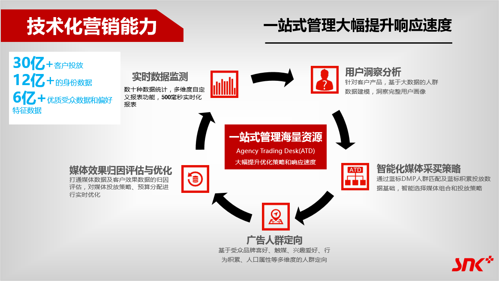

效果营销服务
SNK以绝对领先的市场优势，立足于把营销效果作为考核标准的游戏营销行业近10年，始终关注媒体投放性价比，基于蓝标大数据的技术化洞察，为客户提供卓越的效果营销服务。
SNK的程序化资源购买平台Agency Trading Desk(ATD)基于BuleView大数据技术，整合包括SNK自有的400家国内外媒体资源外，多盟、亿动等国内领先数字广告平台，与社交媒体、wifi联网、搜索行为等不同媒体平台的数据资源，通过数据挖掘模型获取精准、高质的消费者数据，向正确的用户群投放效果广告，并按照曝光量、点击量、注册量、CPM、CPC、CPA等维度分析并优化投放效果，帮助客户制定基于精准用户、效果导向的整合媒体营销方案，最大程度提升ROI。
作为百度的五星级代理供应商，SNK拥有由前百度SEM资深优化专家带队，超过50人的SEM专业服务团队，在北、上、广、深四地提供本地化服务，并有独立海外团队支持全球市场。顶尖的SEM投放、管理、追踪，数据优化平台，有效保障快速、精细的优化账户推广效果，而SEM共享平台系统更是完善的保障了各行业搜索类媒体综合数据积累，有力确保客户的广告优化精准度。
服务内容：广告投放效果可视化分析报告、点击IP反作弊分析、广告渠道投放效果优化、SEM投放管理与优化、SEM策略、SEO&SEM咨询、关键词策略
